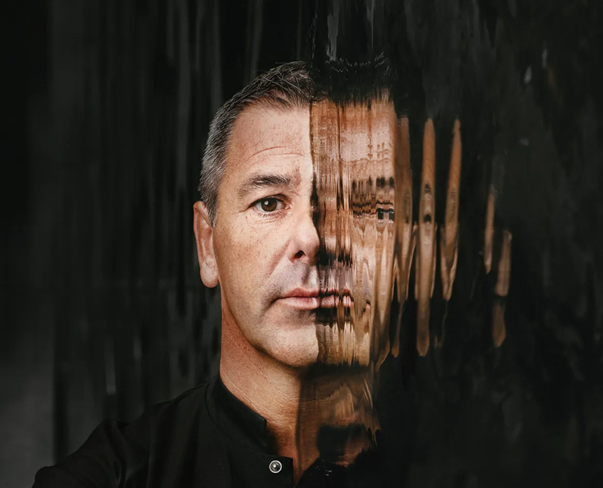

№ 01
0KM ·In L'Eau Vive's garden
The chef's own bed
Le Cube
Route de Floreffe 37, Rivière (Profondeville)
A modern cube-shaped guesthouse Pierre Résimont built next to the restaurant, in the garden along the brook. 150 m², two bedrooms with showers, living room with sofa-bed, fully equipped kitchen, terrace with barbecue — rented as a whole house and bookable independently of the dinner reservation[2]. Best for a family or two couples.
FormatWhole house
Area150 m²
Bedrooms2 + sofa-bed
PricingQuote · direct